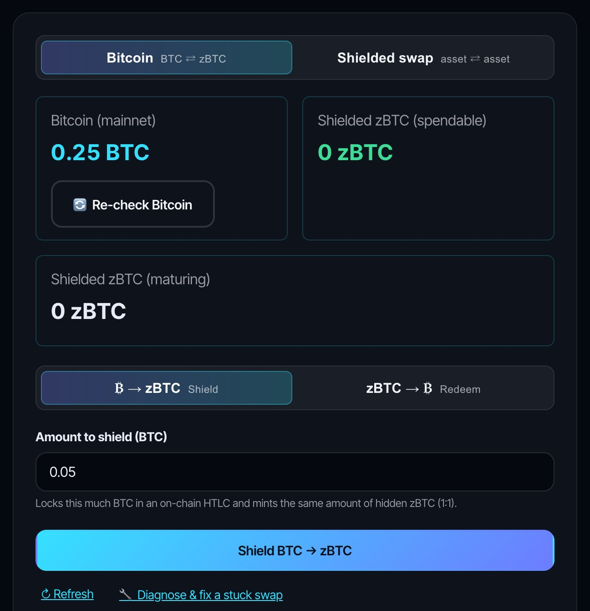
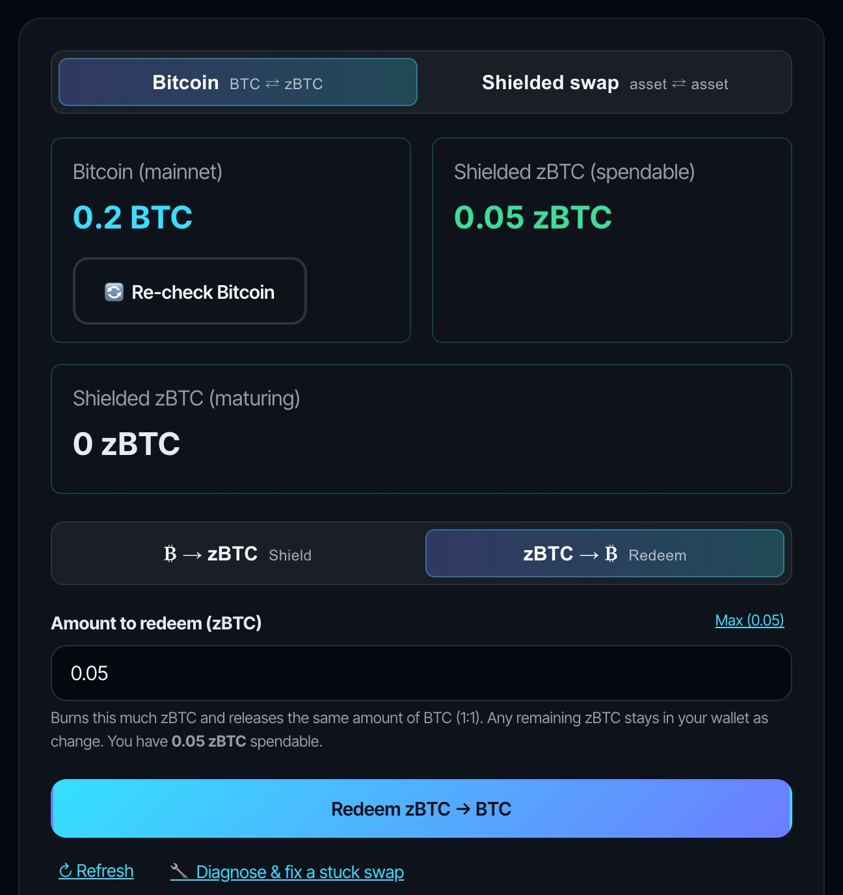

Bitcoin, in and out
Your Bitcoin, made private.
Bring Bitcoin into ZCrypt and it becomes zBTC: one for one, backed by the Bitcoin you locked. Send it as a message, with the sender, receiver and amount hidden. Turn it back into Bitcoin whenever you like.
01
Bitcoin is public. zBTC is not.
Every Bitcoin payment is visible to everyone, forever: who paid, who was paid, and how much. That is how Bitcoin stays honest, and it is also why your balance and your history can be followed by anyone who learns one of your addresses.
zBTC is Bitcoin's value inside ZCrypt's private pool. One zBTC is backed by one Bitcoin held in the reserve. While it is zBTC, it moves the way ZCRYPT does: as a file, to an address or by QR code, in about a second, with nothing about the payment on show.
02
Bitcoin in.


After that the zBTC is in your wallet and spendable. If anything stalls before the zBTC is created, the lock on your Bitcoin expires and the wallet takes it back for you.
03
Bitcoin out.


Screens from the desktop wallet, with sample data.
04
Why you can rely on it.
Bitcoin decides, not a committee
No signer votes on whether your deposit happened. ZCrypt runs a Bitcoin light client inside consensus, and a mint is accepted only with proof that the deposit is in a Bitcoin block.
Both sides or neither
Each direction is an atomic swap. The Bitcoin lock and the ZCrypt lock open with the same secret, so one cannot complete without the other.
Always backed
zBTC is created only against locked Bitcoin and destroyed when Bitcoin is paid out. The chain counts the supply in the open, and it can never pass 21 million.
The reserve key
The Bitcoin reserve is being placed under an MPC key, created in a key ceremony, so that no single person or machine ever holds the whole key.
Under the hood
- In: the wallet funds a P2WSH hash time-locked contract on Bitcoin. Anyone can relay Bitcoin block headers to ZCrypt; validators check the proof of work and the chain linkage, then verify a Merkle inclusion proof (SPV) of the deposit.
- A signature from the depositor's own Bitcoin key names the ZCrypt recipient, so nobody who sees the public deposit can claim the zBTC for themselves.
- New zBTC is held out of the spendable pool until the deposit matures, so a Bitcoin reorganisation cannot leave unbacked zBTC in circulation.
- Out: the wallet locks zBTC in a burn escrow under a SHA-256 hash lock. The reserve funds a Bitcoin payment under the same lock. Claiming the Bitcoin reveals the secret that finalises the burn.
- Both locks carry timeouts. An unfinished swap refunds each side on its own chain.
05
What to know first.
- The bridge is in the desktop wallet, under the Bridge tab. zBTC can be held and sent from the phone wallet too.
- Coming in and going out are public moments. A deposit and a withdrawal are ordinary Bitcoin transactions, and the amount entering or leaving the pool is visible. What you do with zBTC in between is private.
- Use a fresh Bitcoin address for deposits and withdrawals if you do not want them tied to your other Bitcoin history.
- Fees. Bringing Bitcoin in costs Bitcoin's own network fee plus 0.1% of the amount, which is paid to ZCRYPT stakers in zBTC. Taking it out costs Bitcoin's network fee and 0.01 ZCRYPT.
- Bitcoin's own signatures are not post-quantum. zBTC inside the pool is protected the same way as every ZCrypt coin. How ZCrypt is post-quantum
More in Protocol and the privacy model. Get the wallet